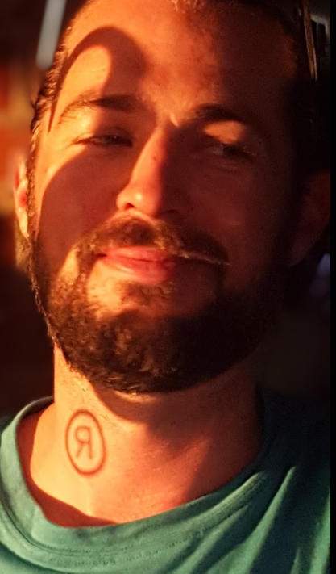
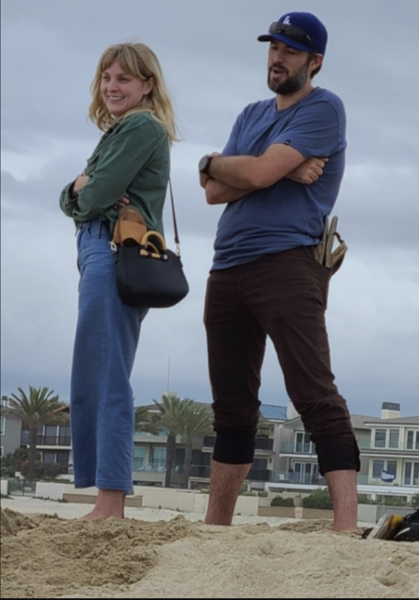
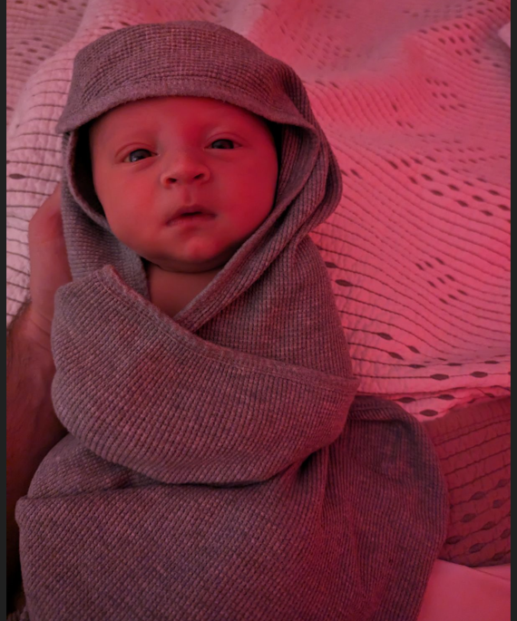
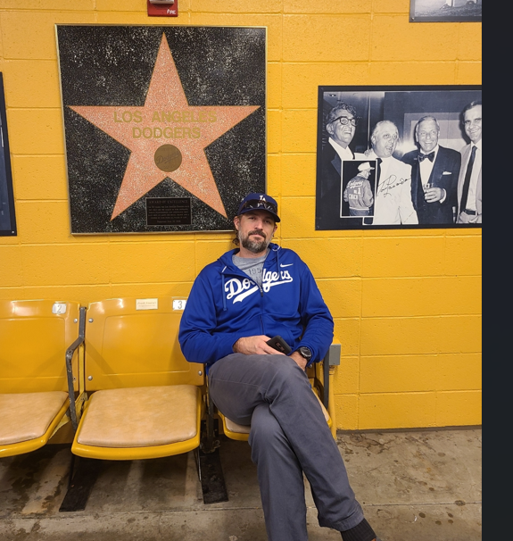

Everyone's favorite overlarge person and former human Baby Giraffe, Nate 'D-O-DOUBLE G' Black, will be turning 40 soon, and if you thought the mystical siren powers of the delightful Kelly Hodges being able to get this man to settle down and get married were borderline miracle, the fact that he made it to the age of 40 may be even more baffling to the collective community based on the viewpoint of our twentysomething year old past selves believing that these events would have been accompanied by an end times apocalypse complete with locusts, frogs, and a pandemic (hmm).
Thank goodness for the love of a good woman to right that ship and bring Nate into the 2020's and beyond, now with the little bundle of joy I am affectionately and unsanctioned-ely calling Thousand Miles!
Congratulations to Kelly and Nathan on this new person we all welcome to the world, it is only fitting that Thousand Miles starts off his life with a camping blowout considering who his parents are, it will be his responsibility (and all of yours) to add to the lore of infamous camping trips passed!
Let's celebrate Nate being half way to the grave with his own Music Festival, NATESTOCK 2024!
Please break out the bellbottoms, heart shaped sunglasses, under arm hair, and now legal MaryJane joints of the 70's and hope this celebrations is about peace, love, and keeping the children entertained enough during the day so that they sleep at night so we can all hang out for campfire MY D*** jokes! (The kids snack table just needs some melatonin gummies mixed in with the fruit snacks)

Nate barely making it to his thirties...You can't spell impregNATE without the NATE

Nate & Kelly Contemplating Children, we must be crazy!

If pooping your pants is cool, then he's Miles Kelly!

A more mature and thoughtful Nate with very gray beard: 'maybe 5 beers & two tequila shots, the usual 10-4 seems excessive on a work night'
Please wear your FAVORITE CONCERT SHIRT or 70's clothing
and
grow your beards and/or hair out for the next two month in honor of the Birthday Boy!
Ladies and gentlemen... no shaving, waxing, threading or grooming in general so we can match the different iterations of Nate over the decades.
This is not a big ask, think of it like Movember, but less whiny and more relevant.
Beards & wigs will be provided to children lacking the hormones to grow their own.
Dates: January 12-14
Location: Newport Dunes Campground
Stay: Newport Dunes Reservations
Or pop by whenever, local style!
* Please see the map with our Home Base (Sites 4115-4107) are locked in and daily shenanigans will take place
* There are plenty of camp sites still available, and also 5-6 cottages for those of you who prefer not to rough it as much, but let's be honest, instacart and UberEats deliveries are possible here, so it's not really roughing it
Get away from the daily grind and unwind along the shores of the Back Bay.
Disconnect and recharge by taking in the scenic beauty. Enjoy all the recreation opportunities on and off the water. Whether coming for the day or for an overnight stay, our laid-back lux resort offers a welcoming vibe.
Our resort amenities bring our cottages and RV camping to a whole new level.
Activities and Amenities:
Everyone should be able to bring their individual camping needs - blankets, chairs, games, and please bring your booze preferences for yourselves.
Look forward to seeing everyone, and always remember to follow the rules and walk your bike.